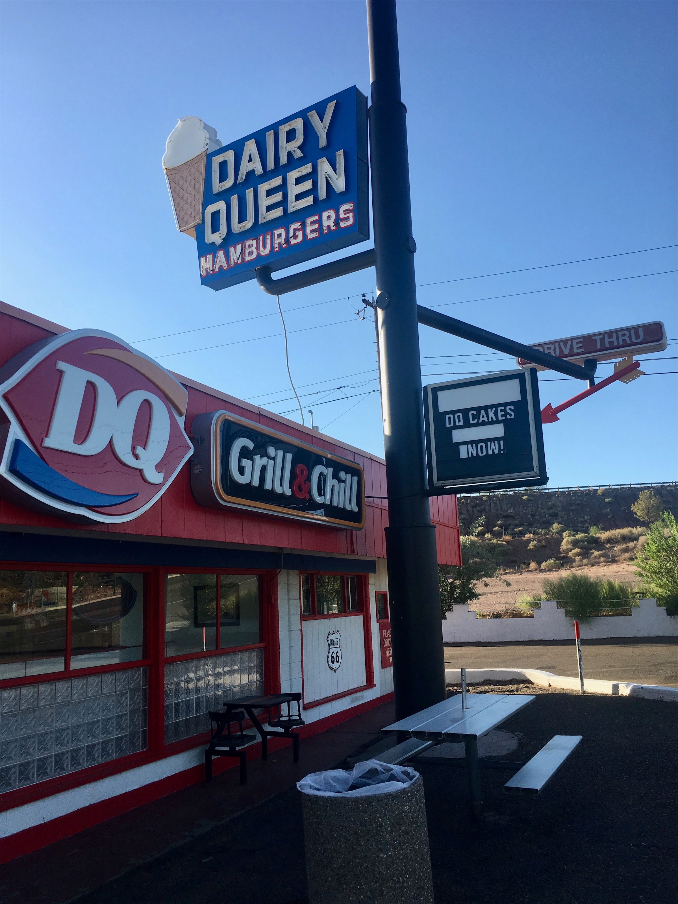
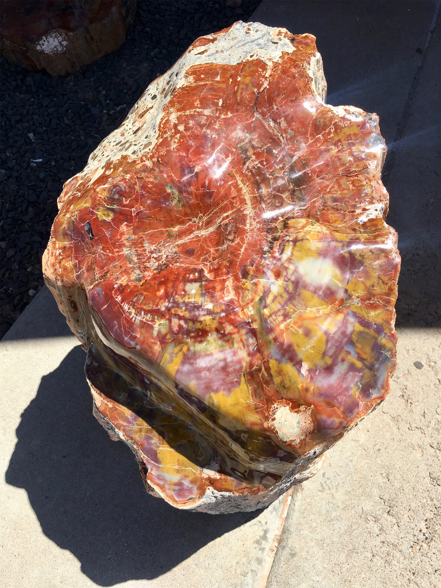
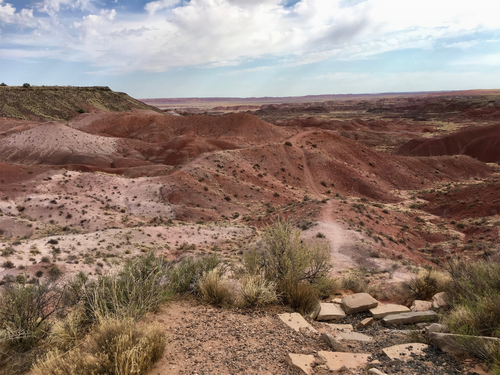
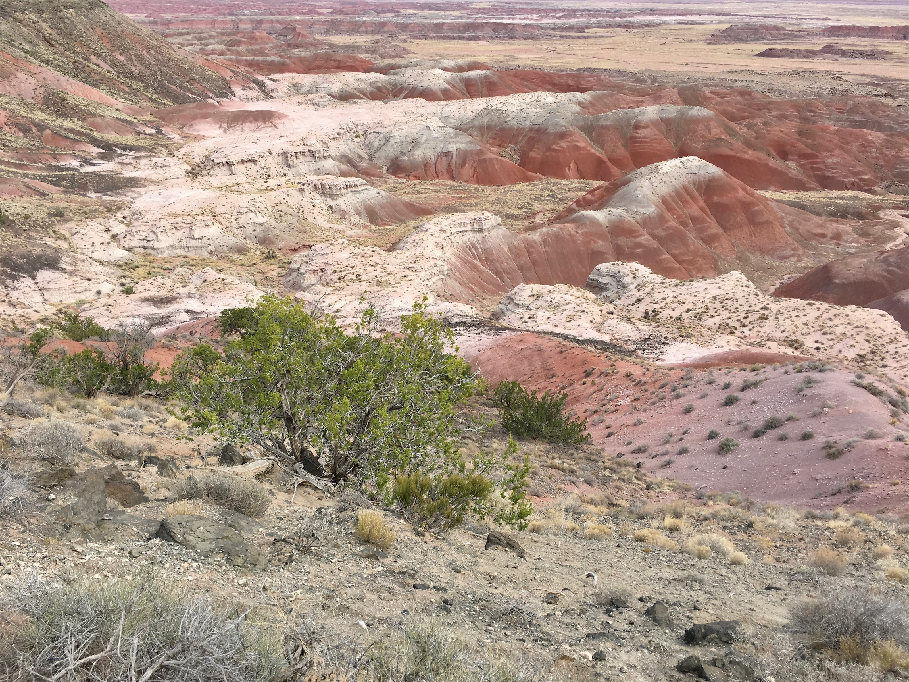
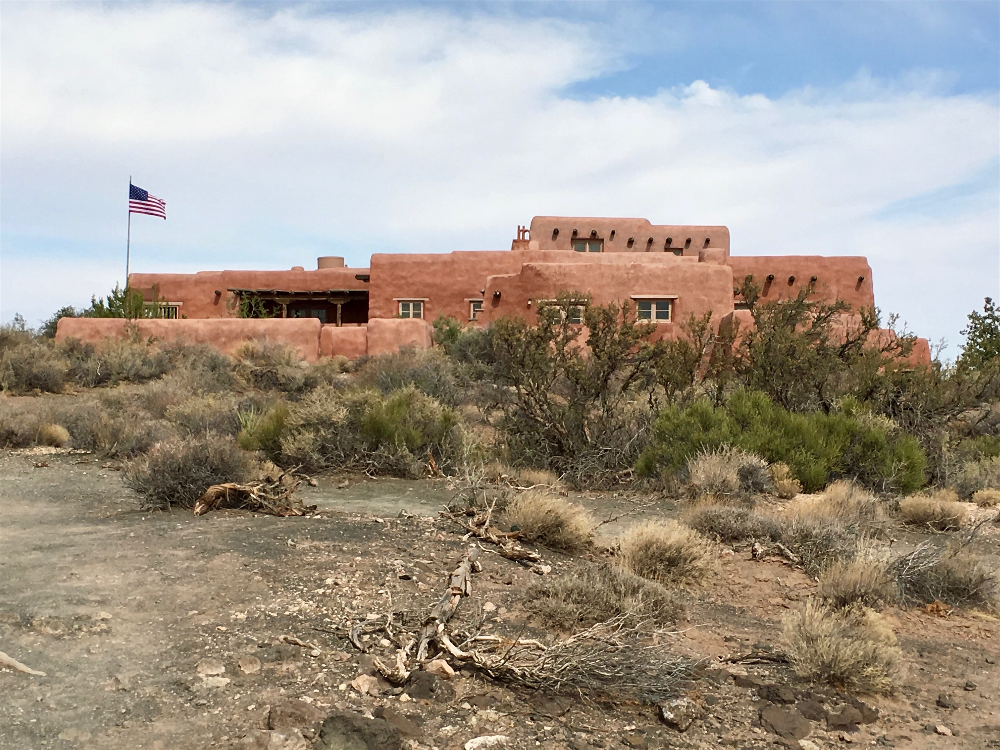
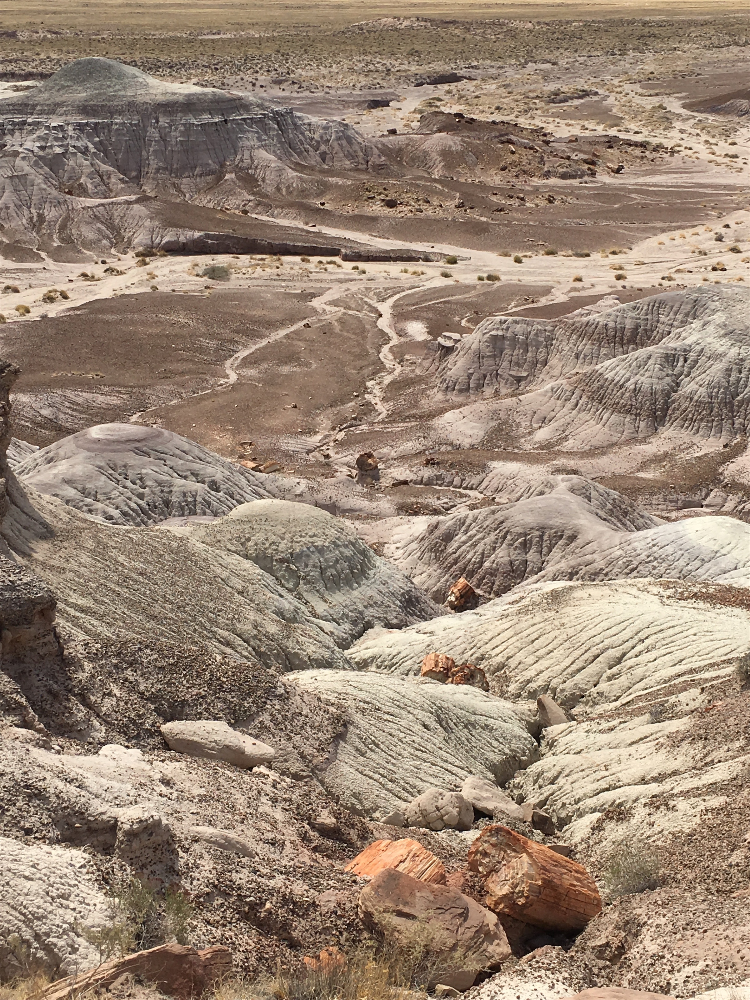
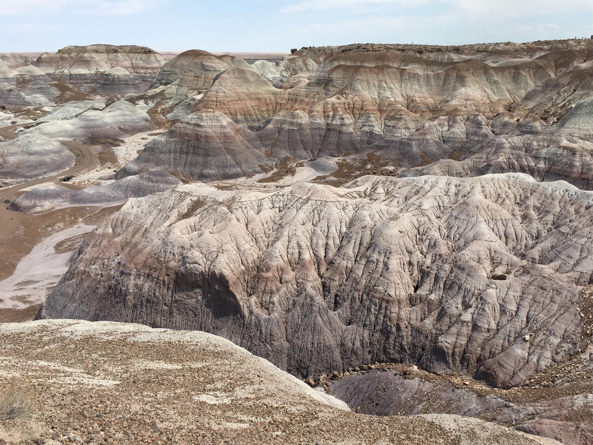
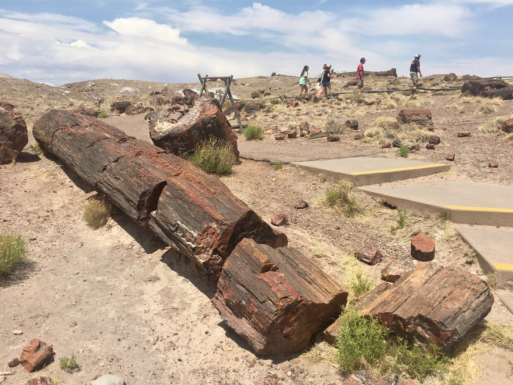

Wednesday, Jun 13, 2018, 8:01 AM MST
Petrified Forest National Park, Concho, AZ, United States
79°F Sunny
79°F Sunny
![]()
6/12 Scottsdale, AZ -> Holbrook, AZ 643 mi, 11 hr
6/13 Holbrook, AZ -> Petrified Forest NP, AZ 468 mi, 7.5 hr
6/13 Petrified Forest NP. AZ Drive 32 mi, 3.25 hr
6/13 Petrified Forest NP, AZ -> Flagstaff, AZ 113 mi, 3 hr
Trip Total: 2,878 mi
We just missed the 110 degree Phoenix heat and the upcoming monsoon season, leaving for our stay overnight in the retro Route 66 town of Holbrook, AZ, which was a little cooler because of the mile-high altitude. We drove the scenic highway 87, which took us from desert to high mountains, and then through dense forests of green trees, with wild horses on the side of the road. The land became more arid as we approached our destination, and then we came across the charred remnants of a 5,000 acre wildfire that closed the road just yesterday. In Holbrook, we stopped at the famous Jim Gray’s Petrified Wood Company, which has an unbelievably huge inventory of every kind of petrified wood and other gems and minerals inside (including tables that cost tens of thousands), and an endless inventory of logs outside.
Early the next morning, we entered the park from the north, famous for the Painted Desert scenery. The colors covered the spectrum, and we hiked a mile along the rim to the historic Painted Desert Inn. We continued south along the 28-mile park road, with a detour to see the Blue Mesa, and in the south we saw petrified trees throughout the landscape. We then headed for 7,000 ft high Flagstaff, AZ for our overnight stay, before we head to the Grand Canyon.







